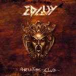

|
|
||
Edguy : Hellfire Club (2004) |
|

http://www.edguy.net |
1. Mysteria 5:45 |
9/10 |
|
El último trabajo de Edguy por fin está aquí, se llama Hellfire Club, es su sexto álbum y su contenido no defrauda: power metal melodioso pero potente, doble bombo, estribillos pegadizos, la excelente voz de Tobias Samment y esta vez además han recurrido a una orquesta para algunas de las canciones. "Mysteria" es un tema directo y variado, un poco más crudo de lo habitual en Edguy pero que mantiene el grado justo de melodía. "The Piper Never Dies" es una canción épica, de tempo lento, salvo al final, pero contundente, larga pero que no se hace en absoluto pesada, con varias partes realmente memorables, incluyendo como no el estribillo, varios solos de guitarra bastante interesantes y algunas superposiciones de voces muy bien trabajadas. El tercer corte, "We don't need a hero", trae doble bombo, melodía y el inconfundible sello de Edguy, patente sobre todo en el altísimo tono de Tobias durante casi toda la canción y en el fabuloso estribillo. "Down to the Devil" arranca con una suave introducción, rota con la explosiva entrada de las guitarras. Con otro de esos estribillos marca de Edguy, es otra de las canciones a recordar. "King of Fools" fue el primer single de este disco: con un tono progresivo aportado por los sintetizadores y otro melodioso y pegadizo estribillo y de nuevo dejando espacio para la voz de Tobias Sammet es otro gran tema. "Forever" es una buena balada, con partes acústicas y bastantes aportaciones de la orquesta. La séptima pista desvela "Under the Moon", una pieza directa apoyada en el doble bombo y una guitarra rítmica bastante contundente. "Lavatory Love Machine", último single de este álbum, es la típica canción de coña que Edguy suele meter en sus discos. En este caso tiene un sonido a medio camino entre el heavy rock y el metal clásico, aunque con un típico estribillo de la banda. "Rise of the Morning Glory" es otra de las que empieza despacio hasta que entran las guitarras distorsionadas y el doble bombo, y donde destaca un potente solo de guitarra, apoyado en un efecto de wah-wah. Tras un corte bastante tonto, "Lucifer in Love", con Lucifer gimiendo!, llega "Navigator", otro tema con cierto ambiente épico, aunque menos interesante que "The Piper Never Dies". "The Spirit will Remain" es la segunda balada del álbum, más pomposa que la anterior, donde de nuevo la orquesta juega un importante papel, aportando una musicalidad que no se puede conseguir a base de samplers o sintetizadores, y donde de nuevo la voz de Tobias tiene espacio para lucirse. La edición limitada tiene dos bonus tracks, una nueva grabación de "Children of Steel", aparecida originalmente en una demo del 94 de la banda, y una versión alternativa de "Mysteria", con Mille Petrozza, cantante de Kreator, acompañando a Tobias Sammet a la voz. Otro excelente disco de Edguy. Ya estoy impaciente por que salga el próximo... |
||
- Crítica escrita por Rubén Béjar - |
||